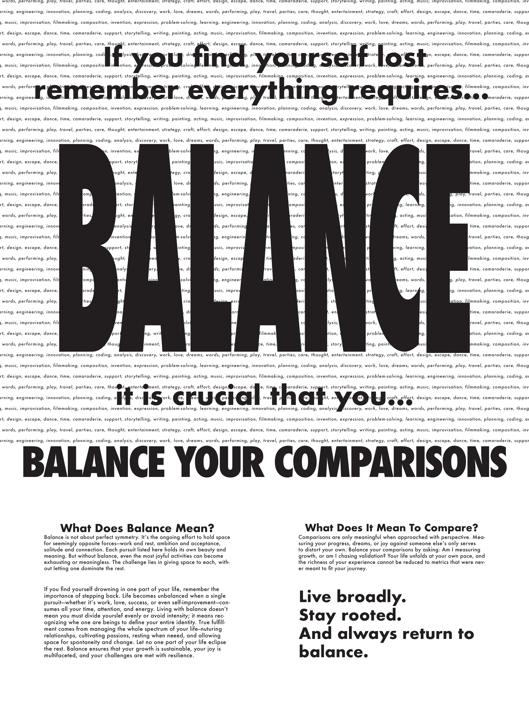
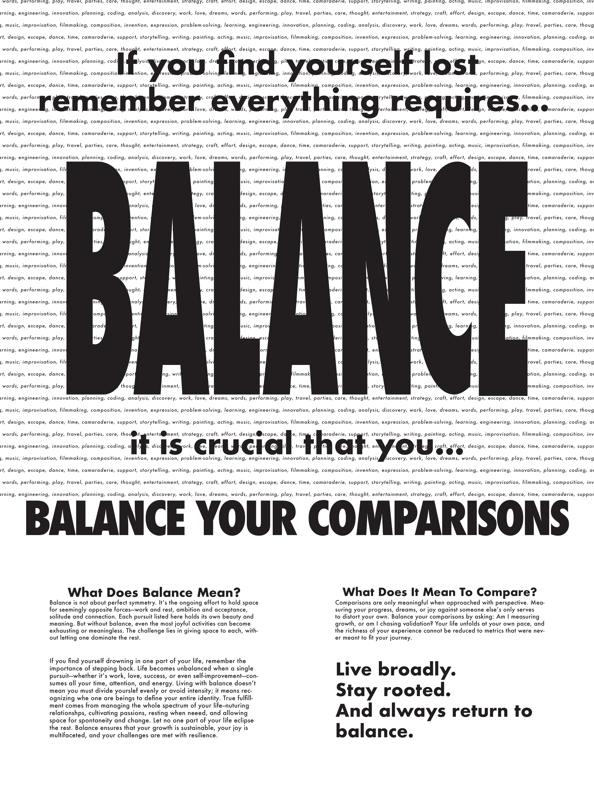

Project Overview
This project was completed as part of VIS 41 and focused on designing a series of posters based on something meaningful to you. The goal was to explore visual hierarchy, typography, and composition while communicating a clear concept. Over the course of the project, I developed multiple concepts and refined my designs through critique and iteration, resulting in a set of posters that explore the theme of balance.


Themes & Concepts
For this project, I chose the theme of balance. The idea of balance is something I constantly try and apply in my life. To me, the idea of balance is not about perfect symmetry, rather it's the ongoing effort to hold space for two seemingly opposite forces—work and rest, ambition and acceptance, solitude and connection. The challenge lies in giving space to each, without letting one dominate the rest.
This theme guided the overall direction of the posters, influencing the mood and visual language of the designs. Additionally, I was influenced by a couple of sub-themes, such as sound, nature, and peace, that guided some of the core elements of my posters. I aimed to create work that felt thoughtful and dynamic, while still maintaining clarity and strong visual hierarchy.
Course Context & My Role
This project focused on designing a series of posters based on personally meaningful concepts. The goal was to explore visual hierarchy, typography, and composition while communicating a clear concept.
Over several weeks, we completed different stages of the poster-making process, including image-making, denotative poster design, connotative poster design, and the final exhibition poster. Each week, we presented our work to the class and received critiques that helped refine our designs.
Design Constraints & Criteria
The project included several design constraints that guided my work. Each poster needed to clearly communicate its concept while adhering to the main components of visual hierarchy: size and scale, color and contrast, spacing and proximity, negative space, and alignment.
For the final exhibition poster, additional criteria required the inclusion of key event information, such as names, dates, and locations, while maintaining a visually engaging and organized layout. These constraints encouraged thoughtful decision-making and careful attention to clarity, readability, and composition.
Ideation Process
I began the ideation process by brainstorming concepts and images that were personally meaningful to me. From there, I coalesced the ideas within the images into 6 potential themes: sound, chaos, deliberation, peace, balance, false dichotomy. I experimented with different image making techniques, such as photography, digital-drawing, audio visualizers, and more to create a collage of images that encapsulated my theme.

As I continued through the poster making process, I was mainly drawn towards
two image-making techniques, that I believed best encapsulated the key qualities
and themes which I desired in my posters.
The first technique I used was using computer systems to visualize
audio through graphs, 3D models, abstract forms, etc.
I chose to create the visuals from one of my favorite songs
"two bad" by 2hollis. I would periodically screenshot the visuals,
capturing varying forms of the song.
The second technique I used was to tweak the colors, saturation, and
applying filters to pictures of nature that I took.


Beyond finding inspiration for the posters and creating the images that would go along with them, I also spent a lot of time working on the content of the posters. Each week, I created iterations of my posters, testing hierarchy, scale, color, and spacing. Feedback from class critiques helped me refine my designs and make deliberate choices that enhanced clarity and impact.

 

The Final Posters
The final posters present a cohesive visual that balances expressive
imagery with clear communication.
Typography, color, and composition were used to create a strong
visual hierarchy and guide the viewer through the information. Scale, contrast,
and spacing emphasize key elements while maintaining the readability and structure
of the posters.
The final exhibition poster incorporates event details such as names, dates,
and locations, while remaining visually engaging and aligned with the
overall concept.


What's next?
If I were to continue developing this project, I would explore different image making techniques and visual formats in search of a new and perhaps better way of expressing the theme. This project helped me better understand the intricacies of visual hierarchy, iteration, and critique. Moving forward, I plan to apply these lessons to create more intentional and cohesive designs.